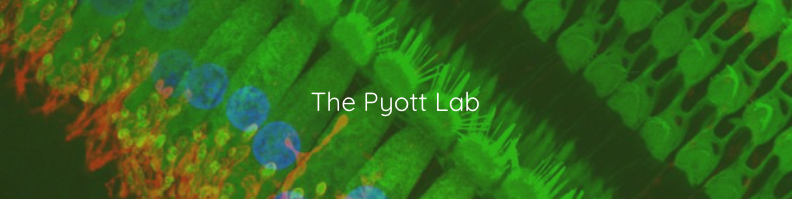

|


Introduction
This program is designed to facilitate the identification of threshold, P1-6 and N1-6 in an ABR waveform series and export this data. The default input/output formats used by the program are designed to work with a custom ABR file format used by the Eaton Peabody Laboratories and The Pyott Lab. It is relatively straightforward to write your own import and export module if needed. Refer to the sample_data/custom_template.tsv for an example of the target file format.
Conversion
ABR Peak Analysis supports a number of file types directly. However, some acquisition softwares, such as IHS and Eclipse, store data from many different stimuli or subjects in a single file. The Tools/Convert IHS and Tools/Convert Eclipse modules can be used to convert these files into the supported format. The Eclipse converter additionally allows for unpacking all recordings in a file, or only specific channels. The Eclipse converter additionally contains a separate mode in which a spreadsheet-based template can be filled in to extract only the desired waveforms. This could be helpful when acquisition is done continuously over a longer time period and only certain time periods are of interest.
Loading Data
Data can be loaded by opening a file directly, dragging it from the sidebar, dragging its icon from the desktop, or double clicking it in the tree view. To invert waveform polarity on load, hold Command on macOS, or Control on Windows/Linux, while double clicking or dragging the file. This is the same as opening normally and pressing P before other data processing.
Analysis
On load, each waveform is optionally bandpass filtered from 200 to 10,000 Hz to remove baseline shift as well as high frequency noise that interferes with the peak detection algorithm. To minimize phase shift, a Butterworth filter is used to forward and reverse filter the waveform. If a custom waveform window is used, the waveform is cropped to selected values only after filtering to minimize ripples. An initial estimate of selected peaks is computed and presented for correction. It is recommended that you correct the location of the peaks to your satisfaction before computing the troughs, as the algorithm relies on knowledge of the peaks to produce the best possible estimate for the troughs. The Tools/Bulk Analysis module can be used to filter waveforms, determine thresholds, and/or mark peaks on multiple files in bulk. It is still recommended to visually confirm peaks and thresholds after bulk analysis and correct guesses where needed.
Saving
Aside from bandpass filtering the raw data provided by the import module and optionally resetting the waveform to custom start and end values, no other pre or post-processing is done on the data. Each analyzed file is stored in an SQLite file containing a table for the (filtered) waveform, (optional) thresholds, and (optional) amplitudes and latencies of selected peaks and troughs.
Exporting
Analyzed files can be exported as a .csv in a long dataframe format using the Tools/Export module. The export module can also be used to create a dataframe of raw or filtered waveforms.
|